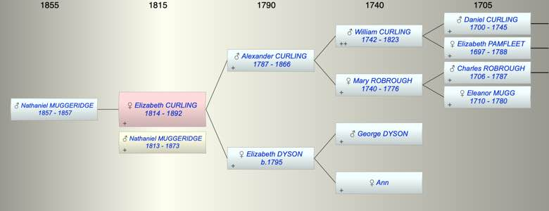

| [Index] |
| Elizabeth CURLING (1814 - 1892) |
|  |

|
| b. 16 Sep 1814 at City of London |
| +. Nathaniel MUGGERIDGE (1813 - 1873) |
| d. 1892 aged 78 |
| Parents: |
| Alexander CURLING (1787 - 1866) |
| Elizabeth DYSON (1795 - ) |
| Siblings (3): |
| Patience CURLING (1812 - 1899) |
| Mary Anne CURLING (1816 - 1817) |
| Sarah Ann CURLING (1818 - ) |
| Children (1): |
| Nathaniel Alexander MUGGERIDGE (1857 - 1857) |
| Events in Elizabeth CURLING (1814 - 1892)'s life | |||||
| Date | Age | Event | Place | Notes | Src |
| 16 Sep 1814 | Elizabeth CURLING was born | City of London | Note 1 | ||
| 1857 | 43 | Birth of son Nathaniel Alexander MUGGERIDGE | Lewisham | Note 2 | |
| 1857 | 43 | Death of son Nathaniel Alexander MUGGERIDGE | Lewisham | Note 3 | |
| 1866 | 52 | Death of father Alexander CURLING (aged 79) | Denmark Hill, London | Note 4 | |
| 17 Mar 1873 | 58 | Death of husband Nathaniel MUGGERIDGE (aged 60) | Worthing | Note 5 | |
| 1892 | 78 | Elizabeth CURLING died | |||
| Personal Notes: |
|
1851 census see her father
1871 census holidaying in Ilfracombe Nathaniel 59 b London elizabeth his wife 55 b London 1891 visiting her sister Patience Deane, 76 widow in Streatham, Elizabeth Muggeridge sister, widow 79 both b London City |
| Created on a Mac™ using iFamily for Mac™ on 8 Oct 2023 |